HST.953 Workshop 9: Exploratory Data Analysis
Wei-Hung Weng
Oct 21, 2016
Instructions:
For those students taking the course for credit, the work done during this workshop is to be handed in. Please e-mail both your Rmd source file and html output to hst953hw@mit.edu no later than Friday Oct. 28, 2016.
To complete the assignment, fill in necessary code in the places indicated with # Students: Insert your code here and text based answers ### Student Answer
Before beginning, please test to see if the Rmd file will compile on your system by clicking the “Knit HTML button” in R studio above.

Principles of Exploratory Data Analysis (EDA)
As stated in class, EDA’s goal is to better understand the data and the process by which it was generated.
Within statistics, it is largely considered separate from inferential statistics (e.g., hypothesis testing, point and interval estimates, etc), where EDA has a very diverse and important set of goals:
- Provide an opportunity to do additional data cleaning.
- Understand how the data is generated, and what the relationships between variables may be.
- Suggest questions and hypotheses that can be subsequently answered and tested.
- Identify what statistical methods may be most appropriate for the data to follow up with these questions and hypotheses.
Cognitive Disfluency – make it work for you?
There is often an urge due to productivity, laziness, or other factors to plow through with an analysis, using sophisticated analysis techniques to find the results you are looking for. With the proliferation of large datasets, this can be quite ineffective, as it largely separates the analyst from the data, resulting in misunderstanding or not understanding the data at all.
There is some evidence that cognitive disfluency (making it harder to learn) can lead to deeper learning. For analysts and data scientists this means slowing things down, often using basic (and sometimes tedious) methods to integrate the primary structure and relationships contained in the data, before pulling out the heavy machinery of modern data analysis.
When working with a new dataset I (Jesse) almost always start with what is discussed below.
Prerequisites
Let’s start by reloading the data into a data frame called dat:
# If the following command doesn't work for you, please run file.choose(), find the aline dataset and replace what it outputs for "aline-dataset.csv" below:
dat <- read.csv("aline-dataset.csv")Numerical Forms of EDA
One form of EDA is to provide numerical summaries of the dataset. This can have many purposes:
- To verify the dataset you loaded is the one you think you did.
- To quantify characteristics of the dataset which need to be reported numerically.
The summary function in R
R has a very handy function, which performs differently for depending on the type of data structures you apply it to. This is the summary function, and it provides a very useful data summary of data frames.
summary(dat)## subject_id hadm_id icustay_id age
## Min. : 12 Min. :100016 Min. :200019 Min. : 16.02
## 1st Qu.:14461 1st Qu.:124202 1st Qu.:225756 1st Qu.: 42.91
## Median :29381 Median :149787 Median :250863 Median : 57.83
## Mean :39321 Mean :149450 Mean :250625 Mean : 66.16
## 3rd Qu.:64446 3rd Qu.:174744 3rd Qu.:276120 3rd Qu.: 74.39
## Max. :99893 Max. :199962 Max. :299995 Max. :300.02
##
## gender_num icustay_intime day_icu_intime_num
## Min. :0.0000 2100-06-26 18:43:00: 1 Min. :0.000
## 1st Qu.:0.0000 2100-07-18 23:52:23: 1 1st Qu.:1.000
## Median :1.0000 2100-07-21 13:42:11: 1 Median :3.000
## Mean :0.5791 2100-08-03 02:58:59: 1 Mean :3.067
## 3rd Qu.:1.0000 2100-08-08 12:35:15: 1 3rd Qu.:5.000
## Max. :1.0000 2100-08-11 06:16:52: 1 Max. :6.000
## (Other) :2745
## hour_icu_intime icustay_outtime icu_los_day
## Min. : 0.0 2100-06-28 16:23:00: 1 Min. : 1.000
## 1st Qu.: 6.0 2100-07-22 15:54:05: 1 1st Qu.: 1.682
## Median :14.0 2100-07-23 16:49:17: 1 Median : 2.430
## Mean :12.9 2100-08-05 17:10:09: 1 Mean : 3.488
## 3rd Qu.:19.0 2100-08-09 23:33:44: 1 3rd Qu.: 4.077
## Max. :23.0 2100-08-14 19:54:43: 1 Max. :37.283
## (Other) :2745
## hospital_los_day hosp_exp_flg icu_exp_flg mort_day
## Min. : 0.03819 Min. :0.0000 Min. :0.00000 Min. : 0.001
## 1st Qu.: 3.70833 1st Qu.:0.0000 1st Qu.:0.00000 1st Qu.: 5.108
## Median : 6.34375 Median :0.0000 Median :0.00000 Median : 84.247
## Mean : 8.17651 Mean :0.1272 Mean :0.08833 Mean : 452.079
## 3rd Qu.: 10.10000 3rd Qu.:0.0000 3rd Qu.:0.00000 3rd Qu.: 638.814
## Max. :111.76528 Max. :1.0000 Max. :1.00000 Max. :3731.972
## NA's :1752
## day_28_flg mort_day_censored censor_flg aline_flg
## Min. :0.0000 Min. : 0.001 Min. :0.0000 Min. :0.0000
## 1st Qu.:0.0000 1st Qu.: 150.000 1st Qu.:0.0000 1st Qu.:0.0000
## Median :0.0000 Median : 150.000 Median :1.0000 Median :1.0000
## Mean :0.1516 Mean : 259.697 Mean :0.6369 Mean :0.5064
## 3rd Qu.:0.0000 3rd Qu.: 150.000 3rd Qu.:1.0000 3rd Qu.:1.0000
## Max. :1.0000 Max. :3731.972 Max. :1.0000 Max. :1.0000
##
## aline_time_day weight_first height_first bmi
## Min. :0.0417 Min. : 1.00 Min. :0.640 Min. : 10.22
## 1st Qu.:0.0834 1st Qu.: 65.10 1st Qu.:1.630 1st Qu.: 23.64
## Median :0.1347 Median : 77.00 Median :1.702 Median : 26.92
## Mean :0.3087 Mean : 80.72 Mean :1.700 Mean : 29.08
## 3rd Qu.:0.2533 3rd Qu.: 90.72 3rd Qu.:1.780 3rd Qu.: 31.58
## Max. :9.8336 Max. :710.00 Max. :4.450 Max. :190.31
## NA's :1358 NA's :1530 NA's :1640 NA's :2205
## service_unit sofa_first map_first hr_first
## MED :1031 Min. : 0.000 Min. :-17.00 Min. : 38.00
## TRAUM : 535 1st Qu.: 0.000 1st Qu.: 76.00 1st Qu.: 75.00
## NMED : 357 Median : 2.000 Median : 86.00 Median : 87.00
## NSURG : 278 Mean : 2.652 Mean : 87.41 Mean : 87.91
## SURG : 220 3rd Qu.: 4.000 3rd Qu.: 98.00 3rd Qu.:100.00
## CMED : 188 Max. :14.000 Max. :310.00 Max. :174.00
## (Other): 142 NA's :1141 NA's :1041
## temp_first spo2_first cvp_first bun_first
## Min. : 0.00 Min. : 14.00 Min. : 0.00 Min. : 1.0
## 1st Qu.:36.11 1st Qu.: 98.00 1st Qu.: 7.00 1st Qu.: 12.0
## Median :36.67 Median :100.00 Median :10.00 Median : 16.0
## Mean :36.66 Mean : 98.41 Mean :10.01 Mean : 20.2
## 3rd Qu.:37.33 3rd Qu.:100.00 3rd Qu.:12.50 3rd Qu.: 23.0
## Max. :40.44 Max. :100.00 Max. :22.00 Max. :139.0
## NA's :1182 NA's :1047 NA's :2676 NA's :348
## creatinine_first chloride_first hgb_first platelet_first
## Min. : 0.100 Min. : 56.0 Min. : 3.60 Min. : 12.0
## 1st Qu.: 0.700 1st Qu.:100.0 1st Qu.:10.60 1st Qu.: 177.0
## Median : 0.900 Median :104.0 Median :12.30 Median : 232.0
## Mean : 1.174 Mean :103.9 Mean :12.25 Mean : 243.1
## 3rd Qu.: 1.200 3rd Qu.:107.0 3rd Qu.:13.90 3rd Qu.: 296.0
## Max. :18.800 Max. :129.0 Max. :20.20 Max. :1313.0
## NA's :349 NA's :282 NA's :249 NA's :339
## potassium_first sodium_first tco2_first wbc_first
## Min. :1.800 Min. : 74.0 Min. : 3.00 Min. : 0.20
## 1st Qu.:3.600 1st Qu.:137.0 1st Qu.:22.00 1st Qu.: 8.00
## Median :4.000 Median :140.0 Median :25.00 Median :11.30
## Mean :4.089 Mean :139.3 Mean :25.08 Mean :12.27
## 3rd Qu.:4.400 3rd Qu.:142.0 3rd Qu.:27.00 3rd Qu.:15.20
## Max. :9.200 Max. :172.0 Max. :53.00 Max. :94.00
## NA's :254 NA's :260 NA's :210 NA's :347
## chf_flg afib_flg renal_flg liver_flg
## Min. :0.00000 Min. :0.0000 Min. :0.00000 Min. :0.00000
## 1st Qu.:0.00000 1st Qu.:0.0000 1st Qu.:0.00000 1st Qu.:0.00000
## Median :0.00000 Median :0.0000 Median :0.00000 Median :0.00000
## Mean :0.08433 Mean :0.1443 Mean :0.06507 Mean :0.05998
## 3rd Qu.:0.00000 3rd Qu.:0.0000 3rd Qu.:0.00000 3rd Qu.:0.00000
## Max. :1.00000 Max. :1.0000 Max. :1.00000 Max. :1.00000
##
## copd_flg cad_flg stroke_flg mal_flg
## Min. :0.00000 Min. :0.0000 Min. :0.0000 Min. :0.000
## 1st Qu.:0.00000 1st Qu.:0.0000 1st Qu.:0.0000 1st Qu.:0.000
## Median :0.00000 Median :0.0000 Median :0.0000 Median :0.000
## Mean :0.01818 Mean :0.1334 Mean :0.1454 Mean :0.145
## 3rd Qu.:0.00000 3rd Qu.:0.0000 3rd Qu.:0.0000 3rd Qu.:0.000
## Max. :1.00000 Max. :1.0000 Max. :1.0000 Max. :1.000
##
## resp_flg endocarditis_flg ards_flg pneumonia_flg
## Min. :0.0000 Min. :0 Min. :0.00000 Min. :0.0000
## 1st Qu.:0.0000 1st Qu.:0 1st Qu.:0.00000 1st Qu.:0.0000
## Median :0.0000 Median :0 Median :0.00000 Median :0.0000
## Mean :0.3453 Mean :0 Mean :0.01672 Mean :0.1745
## 3rd Qu.:1.0000 3rd Qu.:0 3rd Qu.:0.00000 3rd Qu.:0.0000
## Max. :1.0000 Max. :0 Max. :1.00000 Max. :1.0000
## As you can see, this function is very verbose, but produces some useful output. At this point, it’s also a good idea to verify the number of rows and columns are correct:
nrow(dat)## [1] 2751ncol(dat)## [1] 50This should be what you’re expecting (2751 and 50). If it’s not, this could indicate a loading error, or a problem with the data extraction.
As you will note, many of the flg variables listed in the summary output above, are constrained by 0 and 1. This is because they have a binary encoding (usually 1 if present, and 0 if not). Although not necessary in this particular instance, it it sometimes useful to encode these types of variables as factors. The function convert.bin.fac will do this, and we’ll use it to create a new data frame called dat2, and call the summary function on the new data frame. We first need to load/install two packages (devtools and MIMICbook).
if(!("devtools" %in% installed.packages()[,1])) {
install.packages("devtools")
}
library(devtools)
if(!("MIMICbook" %in% installed.packages()[,1])) {
install_git("jraffa/MIMICbook")
}
library(MIMICbook)dat2 <- convert.bin.fac(dat)
summary(dat2)## subject_id hadm_id icustay_id age
## Min. : 12 Min. :100016 Min. :200019 Min. : 16.02
## 1st Qu.:14461 1st Qu.:124202 1st Qu.:225756 1st Qu.: 42.91
## Median :29381 Median :149787 Median :250863 Median : 57.83
## Mean :39321 Mean :149450 Mean :250625 Mean : 66.16
## 3rd Qu.:64446 3rd Qu.:174744 3rd Qu.:276120 3rd Qu.: 74.39
## Max. :99893 Max. :199962 Max. :299995 Max. :300.02
##
## gender_num icustay_intime day_icu_intime_num hour_icu_intime
## 0:1158 2100-06-26 18:43:00: 1 Min. :0.000 Min. : 0.0
## 1:1593 2100-07-18 23:52:23: 1 1st Qu.:1.000 1st Qu.: 6.0
## 2100-07-21 13:42:11: 1 Median :3.000 Median :14.0
## 2100-08-03 02:58:59: 1 Mean :3.067 Mean :12.9
## 2100-08-08 12:35:15: 1 3rd Qu.:5.000 3rd Qu.:19.0
## 2100-08-11 06:16:52: 1 Max. :6.000 Max. :23.0
## (Other) :2745
## icustay_outtime icu_los_day hospital_los_day
## 2100-06-28 16:23:00: 1 Min. : 1.000 Min. : 0.03819
## 2100-07-22 15:54:05: 1 1st Qu.: 1.682 1st Qu.: 3.70833
## 2100-07-23 16:49:17: 1 Median : 2.430 Median : 6.34375
## 2100-08-05 17:10:09: 1 Mean : 3.488 Mean : 8.17651
## 2100-08-09 23:33:44: 1 3rd Qu.: 4.077 3rd Qu.: 10.10000
## 2100-08-14 19:54:43: 1 Max. :37.283 Max. :111.76528
## (Other) :2745
## hosp_exp_flg icu_exp_flg mort_day day_28_flg mort_day_censored
## 0:2401 0:2508 Min. : 0.001 0:2334 Min. : 0.001
## 1: 350 1: 243 1st Qu.: 5.108 1: 417 1st Qu.: 150.000
## Median : 84.247 Median : 150.000
## Mean : 452.079 Mean : 259.697
## 3rd Qu.: 638.814 3rd Qu.: 150.000
## Max. :3731.972 Max. :3731.972
## NA's :1752
## censor_flg aline_flg aline_time_day weight_first height_first
## 0: 999 0:1358 Min. :0.0417 Min. : 1.00 Min. :0.640
## 1:1752 1:1393 1st Qu.:0.0834 1st Qu.: 65.10 1st Qu.:1.630
## Median :0.1347 Median : 77.00 Median :1.702
## Mean :0.3087 Mean : 80.72 Mean :1.700
## 3rd Qu.:0.2533 3rd Qu.: 90.72 3rd Qu.:1.780
## Max. :9.8336 Max. :710.00 Max. :4.450
## NA's :1358 NA's :1530 NA's :1640
## bmi service_unit sofa_first map_first
## Min. : 10.22 MED :1031 Min. : 0.000 Min. :-17.00
## 1st Qu.: 23.64 TRAUM : 535 1st Qu.: 0.000 1st Qu.: 76.00
## Median : 26.92 NMED : 357 Median : 2.000 Median : 86.00
## Mean : 29.08 NSURG : 278 Mean : 2.652 Mean : 87.41
## 3rd Qu.: 31.58 SURG : 220 3rd Qu.: 4.000 3rd Qu.: 98.00
## Max. :190.31 CMED : 188 Max. :14.000 Max. :310.00
## NA's :2205 (Other): 142 NA's :1141
## hr_first temp_first spo2_first cvp_first
## Min. : 38.00 Min. : 0.00 Min. : 14.00 Min. : 0.00
## 1st Qu.: 75.00 1st Qu.:36.11 1st Qu.: 98.00 1st Qu.: 7.00
## Median : 87.00 Median :36.67 Median :100.00 Median :10.00
## Mean : 87.91 Mean :36.66 Mean : 98.41 Mean :10.01
## 3rd Qu.:100.00 3rd Qu.:37.33 3rd Qu.:100.00 3rd Qu.:12.50
## Max. :174.00 Max. :40.44 Max. :100.00 Max. :22.00
## NA's :1041 NA's :1182 NA's :1047 NA's :2676
## bun_first creatinine_first chloride_first hgb_first
## Min. : 1.0 Min. : 0.100 Min. : 56.0 Min. : 3.60
## 1st Qu.: 12.0 1st Qu.: 0.700 1st Qu.:100.0 1st Qu.:10.60
## Median : 16.0 Median : 0.900 Median :104.0 Median :12.30
## Mean : 20.2 Mean : 1.174 Mean :103.9 Mean :12.25
## 3rd Qu.: 23.0 3rd Qu.: 1.200 3rd Qu.:107.0 3rd Qu.:13.90
## Max. :139.0 Max. :18.800 Max. :129.0 Max. :20.20
## NA's :348 NA's :349 NA's :282 NA's :249
## platelet_first potassium_first sodium_first tco2_first
## Min. : 12.0 Min. :1.800 Min. : 74.0 Min. : 3.00
## 1st Qu.: 177.0 1st Qu.:3.600 1st Qu.:137.0 1st Qu.:22.00
## Median : 232.0 Median :4.000 Median :140.0 Median :25.00
## Mean : 243.1 Mean :4.089 Mean :139.3 Mean :25.08
## 3rd Qu.: 296.0 3rd Qu.:4.400 3rd Qu.:142.0 3rd Qu.:27.00
## Max. :1313.0 Max. :9.200 Max. :172.0 Max. :53.00
## NA's :339 NA's :254 NA's :260 NA's :210
## wbc_first chf_flg afib_flg renal_flg liver_flg copd_flg cad_flg
## Min. : 0.20 0:2519 0:2354 0:2572 0:2586 0:2701 0:2384
## 1st Qu.: 8.00 1: 232 1: 397 1: 179 1: 165 1: 50 1: 367
## Median :11.30
## Mean :12.27
## 3rd Qu.:15.20
## Max. :94.00
## NA's :347
## stroke_flg mal_flg resp_flg endocarditis_flg ards_flg pneumonia_flg
## 0:2351 0:2352 0:1801 0:2751 0:2705 0:2271
## 1: 400 1: 399 1: 950 1: 46 1: 480
##
##
##
##
## As you can now see, instead of means (which under the old encoding equate to proportions of patients where the variable == 1), now we have counts of patients with each level of the variable. This is because R’s summary function treats factors and numerics differently.
Often, you will want to report these summaries separately for different groups. For instance, is the mean or median age the same for those who received aline, and those who didn’t? A multi-purpose function called tapply can help us with this.
tapply(dat2$age,dat2$aline_flg,summary)## $`0`
## Min. 1st Qu. Median Mean 3rd Qu. Max.
## 16.78 42.13 57.31 70.74 75.24 300.00
##
## $`1`
## Min. 1st Qu. Median Mean 3rd Qu. Max.
## 16.02 43.69 58.26 61.69 73.30 300.00This function stratifies the first argument (age) by the second argument (aline_flg) and run the third argument (summary) on it. So, in our case, run the summary function on age for those who received aline (aline_flg = 1) and those who didn’t (aline_flg = 0).
Student Question 1:
- Using the
dat2data frame, run the summary function forsofa_first, andservice_unitseparately for those with an aline, and those without.
- Then run the summary function for
agesofa_first, andservice_unitseparately for those who died within 28 days, and those who survived.- In three (3) sentences or less, discuss these findings, and note anything interesting.
Student Answer 1:
tapply(dat2$sofa_first, dat2$aline_flg, summary)## $`0`
## Min. 1st Qu. Median Mean 3rd Qu. Max.
## 0.000 0.000 2.000 2.615 4.000 14.000
##
## $`1`
## Min. 1st Qu. Median Mean 3rd Qu. Max.
## 0.000 0.000 2.000 2.688 4.000 14.000tapply(dat2$service_unit, dat2$aline_flg, summary)## $`0`
## CMED DENT ENT GU GYN MED NMED NSURG OBS OMED ORTHO PSURG
## 64 1 24 1 6 739 185 93 1 8 13 7
## SURG TRAUM
## 43 173
##
## $`1`
## CMED DENT ENT GU GYN MED NMED NSURG OBS OMED ORTHO PSURG
## 124 1 10 13 3 292 172 185 1 5 39 9
## SURG TRAUM
## 177 362tapply(dat2$age, dat2$day_28_flg, summary)## $`0`
## Min. 1st Qu. Median Mean 3rd Qu. Max.
## 16.02 40.13 54.36 60.27 70.54 300.00
##
## $`1`
## Min. 1st Qu. Median Mean 3rd Qu. Max.
## 22.06 64.52 77.00 99.14 84.45 300.00tapply(dat2$sofa_first, dat2$day_28_flg, summary)## $`0`
## Min. 1st Qu. Median Mean 3rd Qu. Max.
## 0.000 0.000 2.000 2.582 4.000 14.000
##
## $`1`
## Min. 1st Qu. Median Mean 3rd Qu. Max.
## 0.000 0.000 3.000 3.043 5.000 14.000tapply(dat2$service_unit, dat2$day_28_flg, summary)## $`0`
## CMED DENT ENT GU GYN MED NMED NSURG OBS OMED ORTHO PSURG
## 165 2 34 14 9 886 233 204 2 4 51 16
## SURG TRAUM
## 212 502
##
## $`1`
## CMED DENT ENT GU GYN MED NMED NSURG OBS OMED ORTHO PSURG
## 23 0 0 0 0 145 124 74 0 9 1 0
## SURG TRAUM
## 8 33- SOFA score is slightly higher in aline usage group. CMED, GU, NSURG, ORTHO, SURG and TRAUM units have higher aline usage. Higher age, SOFA score, and staying in NMED or OMED unit are related to higher 28-day mortality.
Producing a Table One and Other Tables
The output from summary is very useful, but is generally not acceptable formal research reports, let alone a published paper. There are several ways to produce a publication which has a better layout. One way is described in the text book (Chapter 15), another, which we will cover here is through an R package called tableone.
As some of you may know, “Table 1” often refers to the table presented in most medical manuscripts which contains information used to describe the cohort. This often includes information about average patient age, gender distribution, and other important demographic, clinical and socioeconomic characteristics. We will cover briefly how to use the CreateTableOne function in this package to generate a table which is closer to being publication worthy.
The following code will install the tableone package and load it.
if(!("tableone" %in% installed.packages()[,1])) {
install.packages("tableone")
}
library(tableone)Here is an example functional call to CreateTableOne, which computes either the mean and standard deviation for numeric variables, or count and percentage for factors. You specify which variables you want to include in the table
CreateTableOne(vars=c("age","service_unit","aline_flg","day_28_flg"),data=dat2)##
## Overall
## n 2751
## age (mean (sd)) 66.16 (52.62)
## service_unit (%)
## CMED 188 ( 6.8)
## DENT 2 ( 0.1)
## ENT 34 ( 1.2)
## GU 14 ( 0.5)
## GYN 9 ( 0.3)
## MED 1031 (37.5)
## NMED 357 (13.0)
## NSURG 278 (10.1)
## OBS 2 ( 0.1)
## OMED 13 ( 0.5)
## ORTHO 52 ( 1.9)
## PSURG 16 ( 0.6)
## SURG 220 ( 8.0)
## TRAUM 535 (19.4)
## aline_flg = 1 (%) 1393 (50.6)
## day_28_flg = 1 (%) 417 (15.2)We may want to breakdown these summaries further, like we did above with tapply, but we can do it with one function with the CreateTableOne function by passing the strata parameter. strata specifies which variable to stratify (breakdown) the others by. For example, here is the same table in the previous chunk, broken down by whether a patient received an aline or not.
CreateTableOne(vars=c("age","service_unit","aline_flg","day_28_flg"),strata="aline_flg",data=dat2,test=FALSE)## Stratified by aline_flg
## 0 1
## n 1358 1393
## age (mean (sd)) 70.74 (62.19) 61.69 (40.74)
## service_unit (%)
## CMED 64 ( 4.7) 124 ( 8.9)
## DENT 1 ( 0.1) 1 ( 0.1)
## ENT 24 ( 1.8) 10 ( 0.7)
## GU 1 ( 0.1) 13 ( 0.9)
## GYN 6 ( 0.4) 3 ( 0.2)
## MED 739 (54.4) 292 ( 21.0)
## NMED 185 (13.6) 172 ( 12.3)
## NSURG 93 ( 6.8) 185 ( 13.3)
## OBS 1 ( 0.1) 1 ( 0.1)
## OMED 8 ( 0.6) 5 ( 0.4)
## ORTHO 13 ( 1.0) 39 ( 2.8)
## PSURG 7 ( 0.5) 9 ( 0.6)
## SURG 43 ( 3.2) 177 ( 12.7)
## TRAUM 173 (12.7) 362 ( 26.0)
## aline_flg = 1 (%) 0 ( 0.0) 1393 (100.0)
## day_28_flg = 1 (%) 206 (15.2) 211 ( 15.1)Student Question 2:
- Compute a Table to summarise those variable considered before (
age,service_unit,aline_flgandday_28_flg) in addition togender_numandchf_flg, but now stratify by survival at 28 days (day_28_flg).- In 1-2 sentences, do you notice anything interesting or peculiar.
- Repeat part a), but now use the
datdata frame instead ofdat2. Briefly discuss the differences and which you prefer.
Student Answer 2:
CreateTableOne(vars=c("age", "service_unit", "aline_flg", "day_28_flg", "gender_num", "chf_flg"),
strata="day_28_flg",
data=dat2, test=FALSE)## Stratified by day_28_flg
## 0 1
## n 2334 417
## age (mean (sd)) 60.27 (44.44) 99.14 (77.11)
## service_unit (%)
## CMED 165 ( 7.1) 23 ( 5.5)
## DENT 2 ( 0.1) 0 ( 0.0)
## ENT 34 ( 1.5) 0 ( 0.0)
## GU 14 ( 0.6) 0 ( 0.0)
## GYN 9 ( 0.4) 0 ( 0.0)
## MED 886 (38.0) 145 ( 34.8)
## NMED 233 (10.0) 124 ( 29.7)
## NSURG 204 ( 8.7) 74 ( 17.7)
## OBS 2 ( 0.1) 0 ( 0.0)
## OMED 4 ( 0.2) 9 ( 2.2)
## ORTHO 51 ( 2.2) 1 ( 0.2)
## PSURG 16 ( 0.7) 0 ( 0.0)
## SURG 212 ( 9.1) 8 ( 1.9)
## TRAUM 502 (21.5) 33 ( 7.9)
## aline_flg = 1 (%) 1182 (50.6) 211 ( 50.6)
## day_28_flg = 1 (%) 0 ( 0.0) 417 (100.0)
## gender_num = 1 (%) 1389 (59.5) 204 ( 48.9)
## chf_flg = 1 (%) 207 ( 8.9) 25 ( 6.0)- The patients admitted to NMED, NSURG or OMED units, or older patients, have higher 28-day mortality.
aline_flgshould be removed from variable list since it is the outcome variable.
- The patients admitted to NMED, NSURG or OMED units, or older patients, have higher 28-day mortality.
CreateTableOne(vars=c("age", "service_unit", "aline_flg", "day_28_flg", "gender_num", "chf_flg"),
strata="day_28_flg",
data=dat, test=FALSE)## Stratified by day_28_flg
## 0 1
## n 2334 417
## age (mean (sd)) 60.27 (44.44) 99.14 (77.11)
## service_unit (%)
## CMED 165 ( 7.1) 23 ( 5.5)
## DENT 2 ( 0.1) 0 ( 0.0)
## ENT 34 ( 1.5) 0 ( 0.0)
## GU 14 ( 0.6) 0 ( 0.0)
## GYN 9 ( 0.4) 0 ( 0.0)
## MED 886 (38.0) 145 (34.8)
## NMED 233 (10.0) 124 (29.7)
## NSURG 204 ( 8.7) 74 (17.7)
## OBS 2 ( 0.1) 0 ( 0.0)
## OMED 4 ( 0.2) 9 ( 2.2)
## ORTHO 51 ( 2.2) 1 ( 0.2)
## PSURG 16 ( 0.7) 0 ( 0.0)
## SURG 212 ( 9.1) 8 ( 1.9)
## TRAUM 502 (21.5) 33 ( 7.9)
## aline_flg (mean (sd)) 0.51 (0.50) 0.51 (0.50)
## day_28_flg (mean (sd)) 0.00 (0.00) 1.00 (0.00)
## gender_num (mean (sd)) 0.60 (0.49) 0.49 (0.50)
## chf_flg (mean (sd)) 0.09 (0.28) 0.06 (0.24)- The binary variable can’t present well if we didn’t convert the data format. The value of these variables are actually the proportion, and the proportions show here are not meaningful. Using
dattable can’t get the absolute count
- The binary variable can’t present well if we didn’t convert the data format. The value of these variables are actually the proportion, and the proportions show here are not meaningful. Using
Optional:
As an aside, the following code may help for your projects, as it improves the presentation of the tables above. You will still need to update the column and row names manually, but this should paste nicely into Word or LateX!
if(!("dplyr" %in% installed.packages()[,1])) {
install.packages("dplyr")
}
library(dplyr)
CreateTableOne(vars=c("age","service_unit","aline_flg","day_28_flg"),strata="aline_flg",data=dat2,test=FALSE) %>% print(
printToggle = FALSE,
showAllLevels = TRUE,
cramVars = "kon"
) %>%
{data.frame(
variable_name = gsub(" ", " ", rownames(.), fixed = TRUE), .,
row.names = NULL,
check.names = FALSE,
stringsAsFactors = FALSE)} %>%
knitr::kable()| variable_name | level | 0 | 1 |
|---|---|---|---|
| n | 1358 | 1393 | |
| age (mean (sd)) | 70.74 (62.19) | 61.69 (40.74) | |
| service_unit (%) | CMED | 64 ( 4.7) | 124 ( 8.9) |
| DENT | 1 ( 0.1) | 1 ( 0.1) | |
| ENT | 24 ( 1.8) | 10 ( 0.7) | |
| GU | 1 ( 0.1) | 13 ( 0.9) | |
| GYN | 6 ( 0.4) | 3 ( 0.2) | |
| MED | 739 ( 54.4) | 292 ( 21.0) | |
| NMED | 185 ( 13.6) | 172 ( 12.3) | |
| NSURG | 93 ( 6.8) | 185 ( 13.3) | |
| OBS | 1 ( 0.1) | 1 ( 0.1) | |
| OMED | 8 ( 0.6) | 5 ( 0.4) | |
| ORTHO | 13 ( 1.0) | 39 ( 2.8) | |
| PSURG | 7 ( 0.5) | 9 ( 0.6) | |
| SURG | 43 ( 3.2) | 177 ( 12.7) | |
| TRAUM | 173 ( 12.7) | 362 ( 26.0) | |
| aline_flg (%) | 0 | 1358 (100.0) | 0 ( 0.0) |
| 1 | 0 ( 0.0) | 1393 (100.0) | |
| day_28_flg (%) | 0 | 1152 ( 84.8) | 1182 ( 84.9) |
| 1 | 206 ( 15.2) | 211 ( 15.1) |
Other Bivariate Numerical Summaries
Sometimes you may wish to display the relationships between two or more variables directly. For categorical variables this can be tricky. One common way to explore relationships between categorical variables is by producing the cross tabulated tables (“crosstabs” for short). This is mainly done via the table function, which can take several categorical variables, and produce the number of patients which meet criteria for those variables. For instance, looking at how aline was used in men and women:
table(dat2$gender_num,dat2$aline_flg,dnn=c("Gender","Aline"))## Aline
## Gender 0 1
## 0 596 562
## 1 762 831we can see that aline was used 831 times in men (gender_num=1) and 762 times in women (gender_num=0). The raw numbers are often difficult to compare, so often the proportions are more useful. Applying prop.table to our existing table, and adding the argument 1 (for by row, use 2 for columns), we get the proportion of men and women who had aline (48% vs. 52%).
prop.table(table(dat2$gender_num,dat2$aline_flg,dnn=c("Gender","Aline")),1)## Aline
## Gender 0 1
## 0 0.5146805 0.4853195
## 1 0.4783427 0.5216573A different summary for the relationships exists when dealing bivariate numeric data. Sometimes it’s desirable to present the strength of the relationship between two variables, and correlation coefficient is the way to go about this. There is a cor function in R, but when dealing with only two variables, it’s easiest to use the cor.test function. Under the defaults, it computes the Pearson product-moment correlation and computes a hypothesis test (covered briefly earlier today) to assess if there’s evidence that the correlation is not zero. Alternative forms of correlation are computed below, including Spearman’s rho and Kendall’s tau. These latter methods are useful when dealing with data which is not necessarily numeric but ordered (e.g., likert based rankings on a 1-5 scale) or has outliers. Spearman’s rho and Kendall’s tau are rank based methods, and also have a certain degree of robustness to outliers in the data. None of these methods are robust to non-linear relationships, and it’s very easy to miss a strong relationship between two variables if you rely on these methods in isolation.
cor.test(dat2$bun_first,dat2$creatinine_first)##
## Pearson's product-moment correlation
##
## data: dat2$bun_first and dat2$creatinine_first
## t = 41.694, df = 2397, p-value < 2.2e-16
## alternative hypothesis: true correlation is not equal to 0
## 95 percent confidence interval:
## 0.6245445 0.6709689
## sample estimates:
## cor
## 0.648359cor.test(dat2$bun_first,dat2$creatinine_first,method="spearman")## Warning in cor.test.default(dat2$bun_first, dat2$creatinine_first, method =
## "spearman"): Cannot compute exact p-value with ties##
## Spearman's rank correlation rho
##
## data: dat2$bun_first and dat2$creatinine_first
## S = 977030000, p-value < 2.2e-16
## alternative hypothesis: true rho is not equal to 0
## sample estimates:
## rho
## 0.5754121cor.test(dat2$bun_first,dat2$creatinine_first,method="kendall")##
## Kendall's rank correlation tau
##
## data: dat2$bun_first and dat2$creatinine_first
## z = 30.276, p-value < 2.2e-16
## alternative hypothesis: true tau is not equal to 0
## sample estimates:
## tau
## 0.4372488We can produce a scatterplot of the same two variables:
plot(dat2$bun_first,dat2$creatinine_first)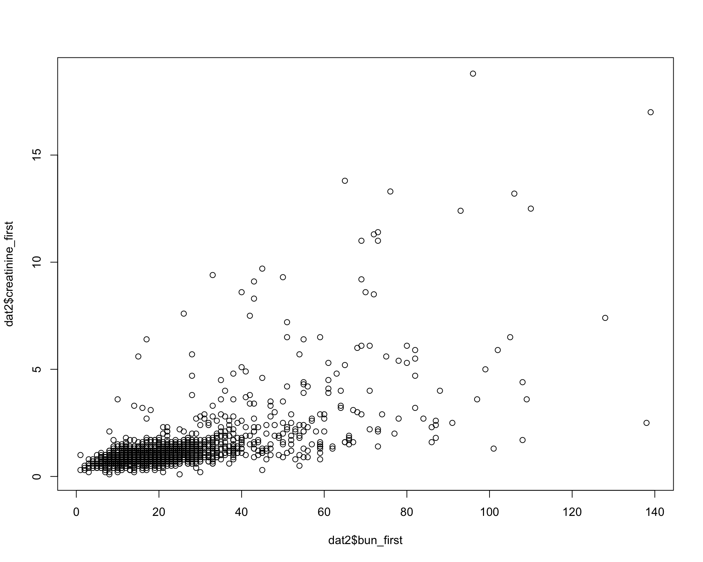
We can see that there is indeed a positive correlation between the two variables, but the data has more variability for higher values of bun_first and creatinine_first. It’s advisable to consider transformations of these two variables and be wary about using Pearson’s correlation.
Creating Categorical Variables from Continuous/Numeric Variables
Sometimes numeric variables need to be broken down into categorical variables or factors. This can be done for a variety of reasons. There is a useful function called cut2 in the Hmisc package. We install it and use it below.
if(!("Hmisc" %in% installed.packages()[,1])) {
install.packages("Hmisc")
}
library(Hmisc)
dat2$age.cat <- cut2(dat2$age,g=5)
table(dat2$age.cat)##
## [16.0, 38.8) [38.8, 51.9) [51.9, 63.9) [63.9, 77.8) [77.8,300.0]
## 551 550 550 550 550dat2$age.cat2 <- cut2(dat2$age,c(25,40,55,70,85))
table(dat2$age.cat2)##
## [ 16, 25) [ 25, 40) [ 40, 55) [ 55, 70) [ 70, 85) [ 85,300]
## 238 352 652 635 630 244cut2 typically needs two arguments. The first is a numeric variable to convert into a factor, and the second is how to do the splitting. Specifying g=5 (as above for age.cat) breaks the numeric variable into 5 groups, with the cut points determined by attempting to make the groups as equally sized as possible. As you can see in this example, due to the odd number of patients, they are not perfectly even. The second approach requires passing the cut points. In the second example, we tell R to cut the data at 25, 40,…. This results in 6 groups for five cut points.
Student Question 3:
- Create a new variable in the
dat2data frame calledsofa.catmade up of four (approx.) equally sized groups for SOFA. Print the sample size in each group. Why might the number in each group differ so much?- For each SOFA group calculate the number of people who survived and died in the hospital and at 28 days (use the
hosp_exp_flgandday_28_flgvariable).- Does mortality go up or down as SOFA increases?
- Can you suggest a reason why we might want to convert
ageto a categorical variable instead of using it in it’s current form?
dat2$sofa.cat <- cut2(dat2$sofa_first,c(2,4,6,8,10)) # This is not the answer for part a). Please amend to follow the instructions.Student Answer 3:
dat2$sofa.cat <- cut2(dat2$sofa_first, g=4)
table(dat2$sofa.cat)##
## 0 [1, 3) [3, 5) [5,14]
## 853 599 674 625- For the data points with the same value, we can’t separate them into two groups. For example, 853 patients has SOFA score = 0, but we can’t separate them and put some patients in the other group.
CreateTableOne(vars=c("hosp_exp_flg", "day_28_flg"),
strata="sofa.cat",
data=dat2, test=FALSE)## Stratified by sofa.cat
## 0 [1, 3) [3, 5) [5,14]
## n 853 599 674 625
## hosp_exp_flg = 1 (%) 108 (12.7) 67 (11.2) 78 (11.6) 97 (15.5)
## day_28_flg = 1 (%) 121 (14.2) 83 (13.9) 93 (13.8) 120 (19.2)- We can use
CreateTableOneto illustrate the answer.
- We can use
- The proportion of mortality goes up as SOFA increases.
- Grouping by
agecan reduce the unnecessary complex modeling. For example, patients with age of 63 or 64 may have similar underlying physical condition based on age, therefore it is reasonable to group them together.
- Grouping by
Plotting relationships with discrete variables
Plotting discrete data can be a little tricky, but if done right can be very effective. For an example of why it’s difficult, using the basic plot command from last week, let’s plot two discrete variables: gender_num and aline_flg.
plot(dat2$gender_num,dat2$aline_flg,xlab="Gender",ylab="IAC")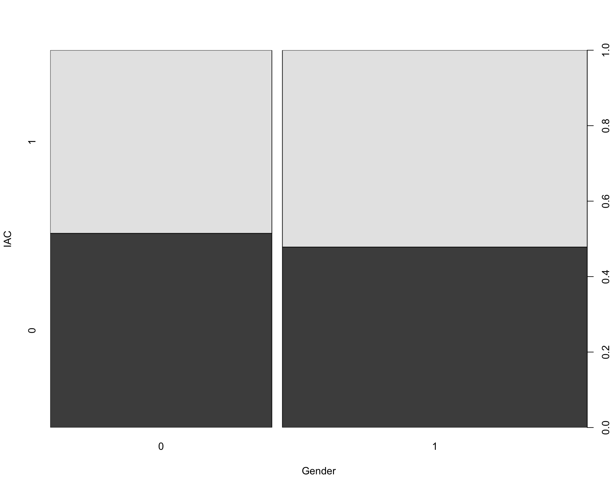
Because we have converted gender_num and aline_flg to a factor, R gives us what is called a “Factor Plot”. The area of the light grey region is proportional to the proportion of each gender who received an aline. In this case, there is not that big of a difference between the genders.
This factor plot is more useful than if we were to keep the original numerical class both these variables had. For example, if we use the original dat data frame both gender_num and aline_flg are numeric variables, and when we plot these, we don’t end up with something very useful:
plot(dat$gender_num,dat$aline_flg,xlab="Gender",ylab="IAC")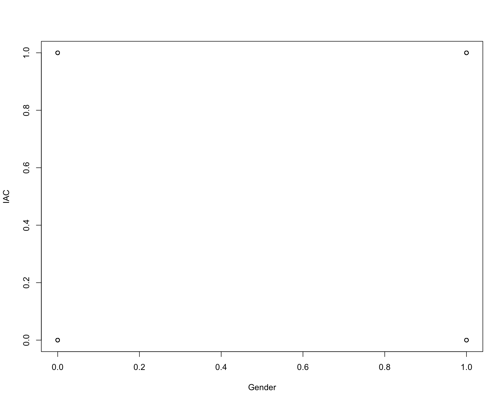
In this case we only have four different types of data points, and although we could try to jitter the values to get a slightly more useful plot, it’s unlikely that this would give us a good visual interpretation of the data.
Sometimes the covariate may take on more than two levels. Here, we plot the in-hospital mortality rate by the different SOFA values, and put a smooth curve through the points. This covers a more advanced topic, and we don’t expect you to understand the technical details of the code below.
plot(names(table(dat2$sofa_first)),sapply(split(dat2,dat2$sofa_first),function(x) { mean(x$hosp_exp_flg==1,na.rm=T)}),xlab="SOFA",ylab="In-Hospital Mortality",cex=log(as.numeric(table(dat2$sofa_first)+1))/5)
lines(smooth.spline(dat2$sofa_first,dat2$hosp_exp_flg==1),type="l")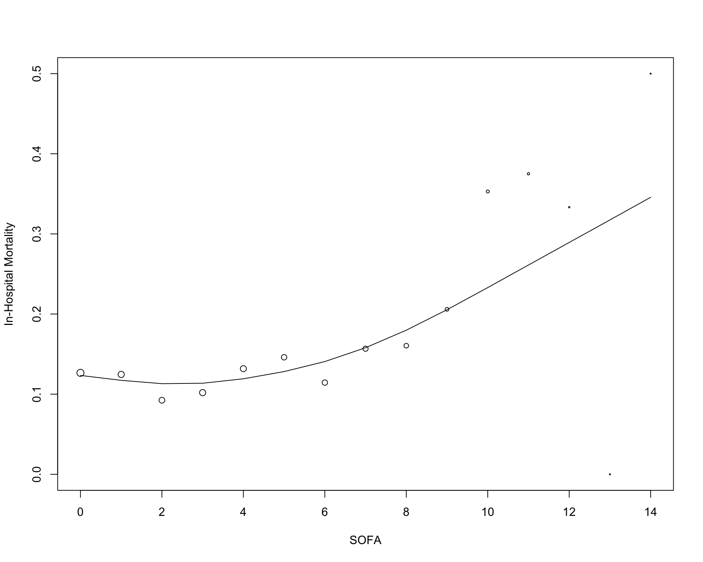
SOFA is a validated disease severity scale for the ICU, and generally correlates strongly with mortality. Here, while the mortality rate generally increases as SOFA increases, the smooth fit isn’t necessarily non-decreasing as SOFA values increase. We have added points roughly proportional to the sample size of each SOFA level, and you’ll see towards the high levels of SOFA, very few patients are observed, with the second highest score (13) having a 100% survival rate – although only in two patients!
For binary outcomes, it is often useful to plot the proportion of patients with the outcome (e.g., mortality rate) by the different levels of a covariate of interest. Because sample size plays such an important role in the uncertainty associated with these estimate proportions, it seems appropriate to include an estimate of our uncertainty via a confidence interval.
In the MIMICbook package you installed above, there is a plot_prop_by_level which can plot the proportion of patients with an outcome by one or two factor variables. For instance, if we wished to plot the in hospital mortality rate by the SOFA categories (sofa.cat) we defined above, we can using:
plot_prop_by_level(dat2,"sofa.cat","hosp_exp_flg")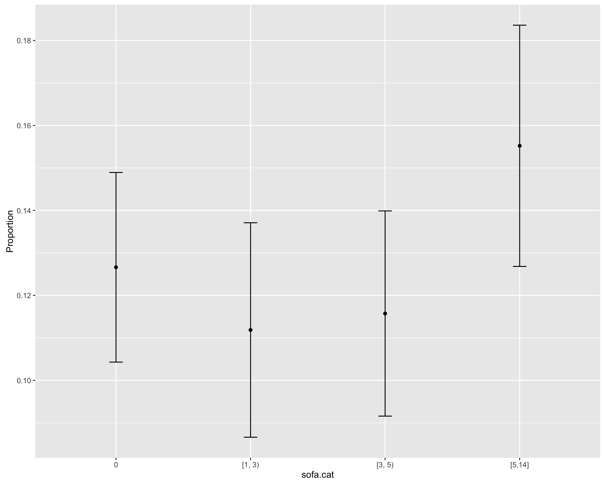
Often it’s useful to consider more than one covariate at a time to assess confounding and effect modification. Here, if we wished to examine sofa.cat and gender_num at the same time, we add factor.var2="gender_num" to our previous use of plot_prop_by_level.
plot_prop_by_level(dat2,"sofa.cat","hosp_exp_flg",factor.var2="gender_num")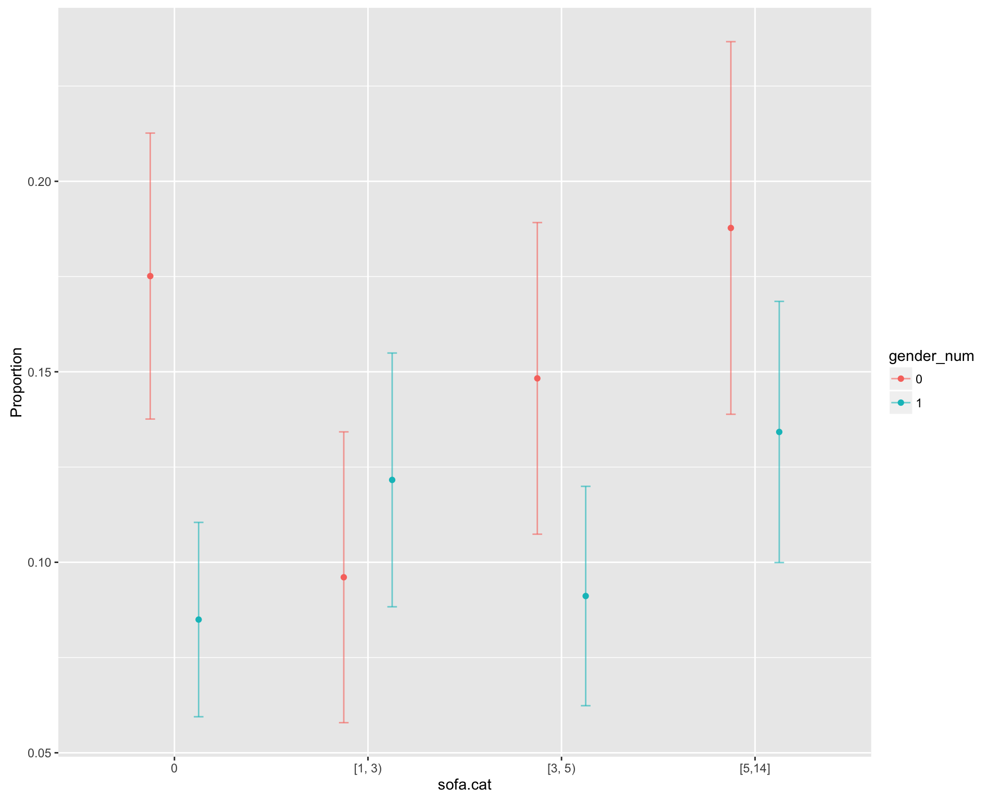
Here we see that in hospital mortality is higher in women in 3/4 of the SOFA groups we considered, suggesting that it might be an important confounder for this outcome and variable.
Student Question 4:
- Make a factor plot of the categories of SOFA we created (
sofa.cat) and hospital mortality (hosp_exp_flg). Discuss what trend you observed.- Use
plot_prop_by_levelusingsofa.catas the covariate of interest and 28 day mortality (day_28_flg) as the outcome. How does this plot compare with part a)?- Include the main covariate of interest for this study
aline_flgas the second factor variable and extend part b).- Repeat part c), but swap the aline and sofa arguments. Does this plot better illustrate our objective? Why or Why not?
- Create a new variable,
sofa.cat2, with cut points at 3, 6, 9, 12. Repeat parts b) and c). Is there a problem with these plots? Why is this case? Suggest a possible remedy.- Make a plot of the 28 day mortality outcome,
aline_flgandchf_flg. Ignoring the statistical significance (i.e., do not perform any formal tests), comment on why this plot may suggest the complexity of any potential effect of aline.
Student Answer 4:
plot(dat2$sofa.cat, dat2$hosp_exp_flg, xlab="SOFA category",ylab="Hospital mortality")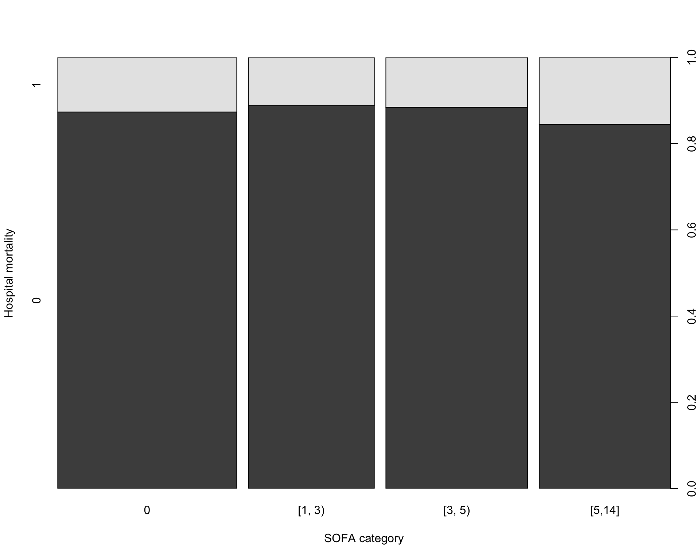
- The hospital mortality increases when the SOFA score increases (the group with higher SOFA score has less area of dark region).
plot_prop_by_level(dat2,"sofa.cat", "day_28_flg")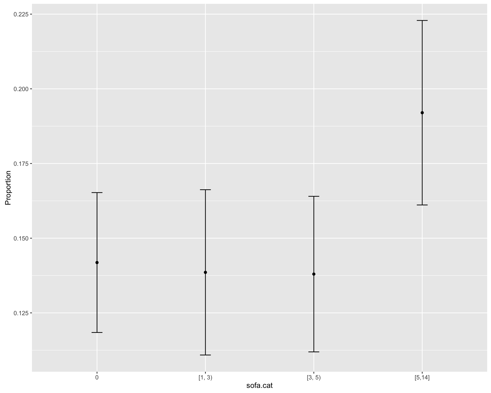
- In this plot we only focus on the proportion of mortality (light region) so it become much clearer about the information of mortality proportion.
plot_prop_by_level(dat2,"sofa.cat", "day_28_flg", factor.var2="aline_flg")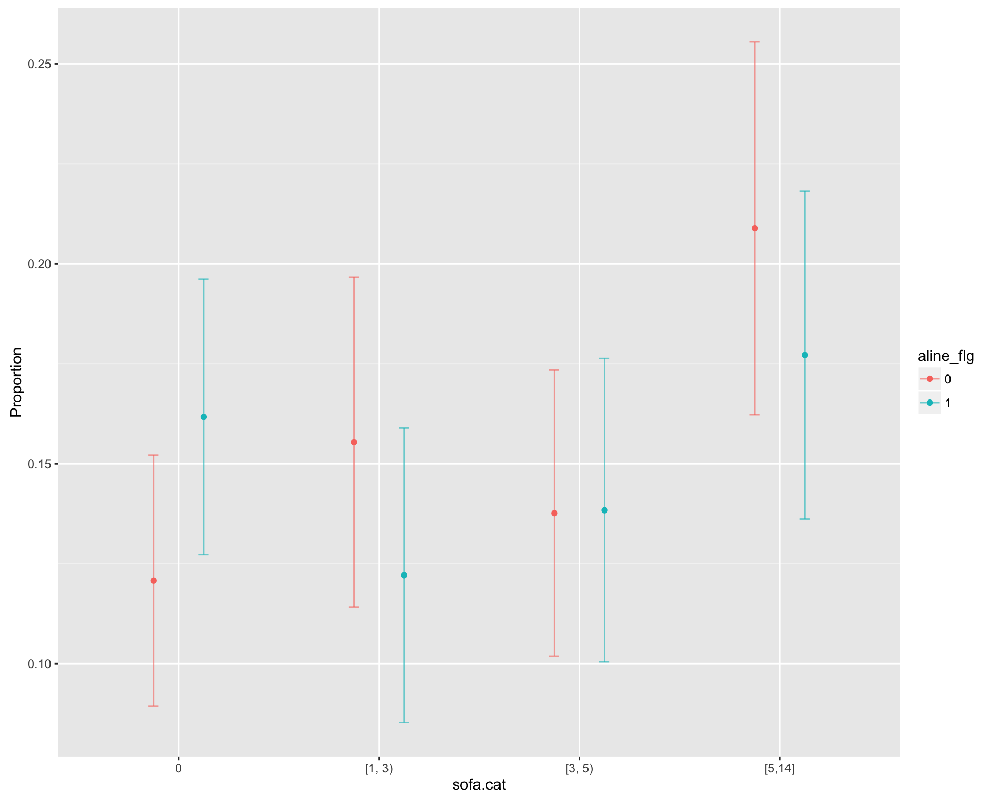
- In the group of SOFA score = 0, the proportion of using A-line is larger than not using A-line. But in other groups the proportion of using A-line is equal or smaller than not using A-line.
plot_prop_by_level(dat2,"aline_flg", "day_28_flg", factor.var2="sofa.cat")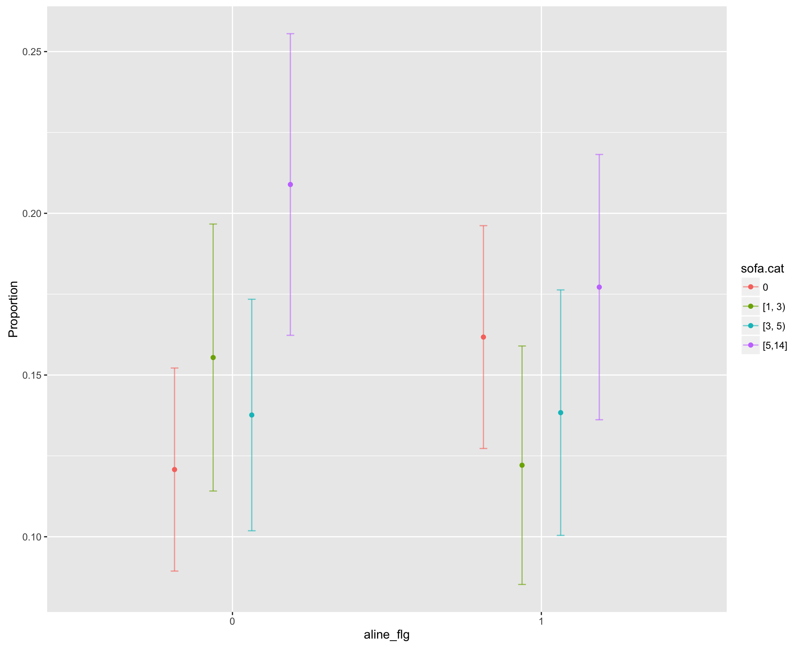
- The plot is better because that the different SOFA categories were placed closer, and it can answer which SOFA category has higher mortality based on different A-line conditions.
dat2$sofa.cat2 <- cut2(dat2$sofa_first,c(3, 6, 9, 12))
plot_prop_by_level(dat2,"sofa.cat2", "day_28_flg")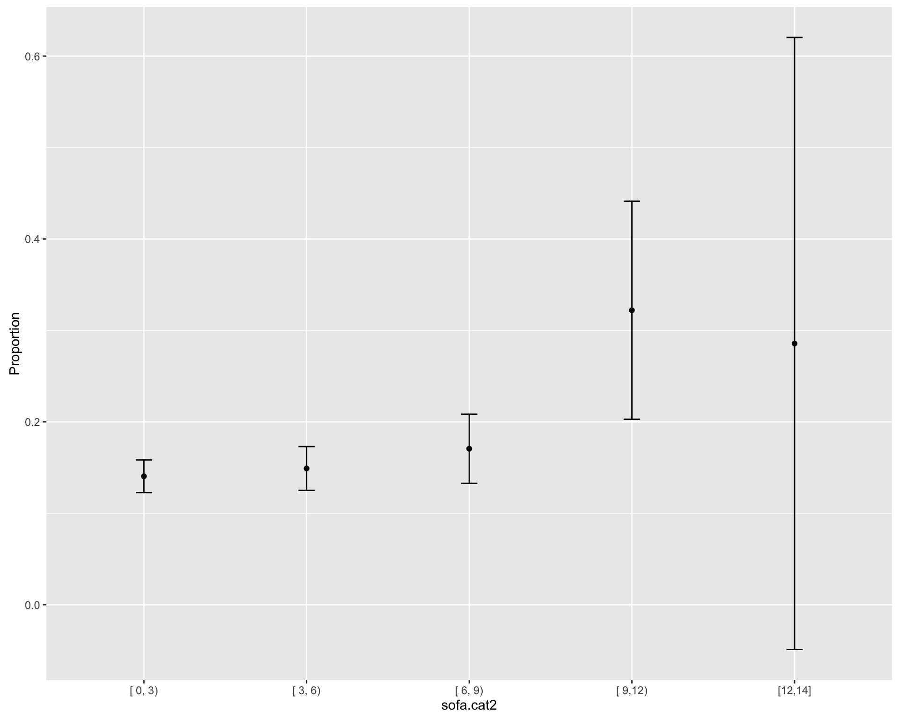
- The big problem of this approach is that the number of patients is unbalanced in different SOFA categories, and we can see that in the last group
[12, 14)there are few patients and the error bar is long. We can’t make sure whether the category with the largest SOFA score has the great mortality. One solution is to separate the categorical variable (sofa.cat) with approximately equal number of the patients as we have done in (b) and (c), or maybe we can use different weights for different SOFA categories based on their number of patients. For example, for the categories with the number of patients of 1, 2 and 3, give them the weight adjustment of 6, 3, and 2, respectively.
- The big problem of this approach is that the number of patients is unbalanced in different SOFA categories, and we can see that in the last group
plot_prop_by_level(dat2,"chf_flg", "day_28_flg", factor.var2="aline_flg")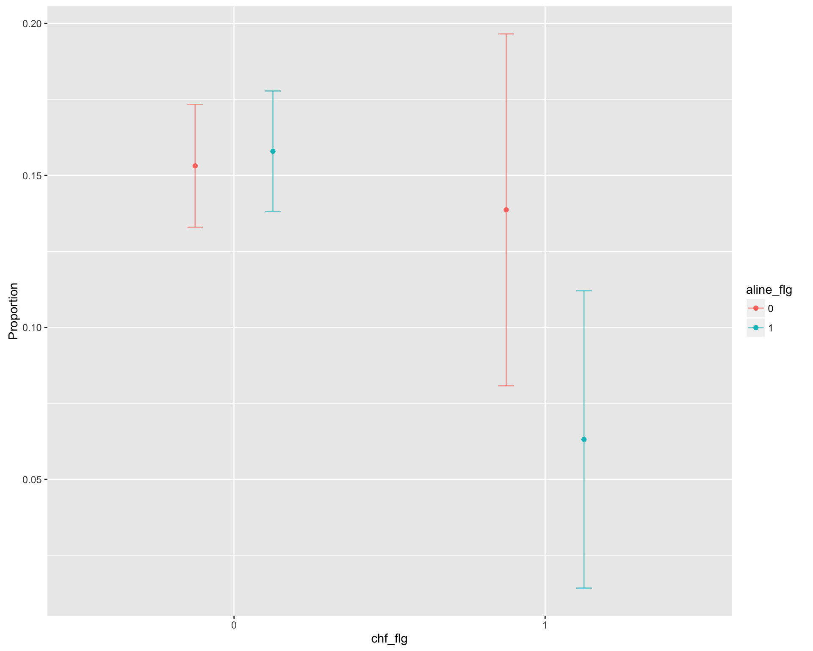
- In this plot we observed that in the CHF patients, the subgroup of patients using A-line has less mortality, but in the non-CHF patients we didn’t see this phenomenon. The effect might because that the CHF patients with A-line insertion can monitor and report their blood pressure in time. The doctor can manage the patients immediately once the blood pressure becomes unstable. Therefore A-line insertion may be related to the reduction of mortality in CHF patients. However, unless the RCT is performed, we can not 100% sure that our causal inference is correct.
Odds ratios
Note: For those with a programming background, R indexes vectors starting from 1.
As discussed earlier today, odds ratios are very commonly used to communicate relative effect sizes for binary outcomes, particularly in observational data. Calculation is straightforward, but often misunderstood. We start with a 2 x 2 table. Below is the 2 x 2 table for in hospital mortality and having an arterial line. I’ve assigned it to a new variable called egtab.
egtab <- table(dat2$aline_flg,dat2$hosp_exp_flg,dnn=c("Aline","Hosp. Mort"))
egtab## Hosp. Mort
## Aline 0 1
## 0 1193 165
## 1 1208 185It’s hard to interpret the raw counts, so we’ll use prop.table to compute the proportions who died and lived by row (margin 1, aline).
pegtab <- prop.table(egtab,1)
pegtab## Hosp. Mort
## Aline 0 1
## 0 0.8784978 0.1215022
## 1 0.8671931 0.1328069Odds are \(\frac{p}{1-p}\) where \(p\) is the proportion with the outcome (death) in a group of patients, which is in the second column. We can index the above table by column (tab[,idx] will retrieve column idx from the table [or matrix] tab) to compute the odds in each group.
Oddsegtab <-pegtab[,2]/pegtab[,1]
Oddsegtab## 0 1
## 0.1383068 0.1531457Now we have the odds of the outcome in those who got an aline 1 and those who didn’t 0. We need to pick a reference group. We’ll calculate it both ways, but let’s assume we want those without an aline to be the reference:
Oddsegtab[2]/Oddsegtab[1]## 1
## 1.10729If we wanted those with an aline to be the reference group:
Oddsegtab[1]/Oddsegtab[2]## 0
## 0.903106If we wanted to plot this information, and include a confidence interval, we can use the plot_OR_by_level from the MIMICbook package:
plot_OR_by_level(dat2,"aline_flg","hosp_exp_flg")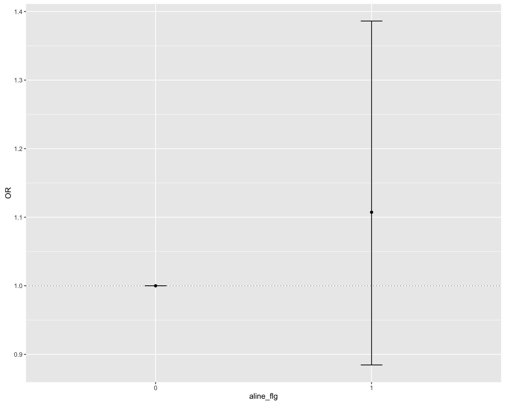
This by default includes an odds ratio of 1 indicating the reference group. To remove this point use the include.ref.group.effect argument:
plot_OR_by_level(dat2,"aline_flg","hosp_exp_flg",include.ref.group.effect = FALSE)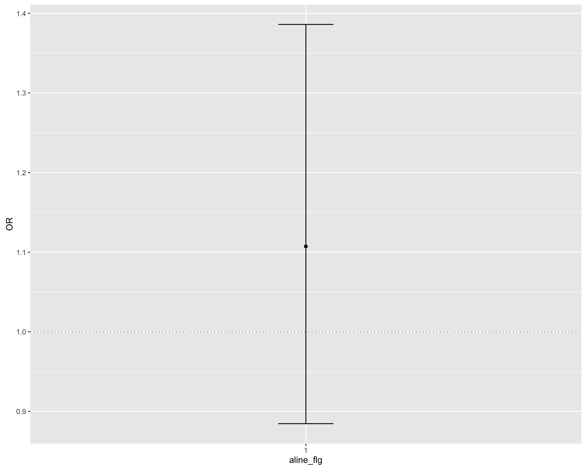
You can also look at more than one covariate at a time. For instance, looking at aline_flg and the gender_num variable:
plot_OR_by_level(dat2,"gender_num","hosp_exp_flg",factor.var2="aline_flg",include.ref.group.effect = TRUE)
Here we have computed the odds ratio for aline (vs no aline) separately for men and women.
Student Question 5:
- Create a 2 x 2 table with
chf_flgand the variableday_28_flgoutcome and assign it to a variable calledtab22- Compute the odds ratio for having CHF vs. not having CHF using this table.
- Construct a plot of the odds ratios and 95% confidence intervals using the
plot_OR_by_levelfunction for CHF and 28 day mortality.- Create a 4 x 2 table with the
sofa.catvariable and theday_28_flgoutcome and assign it to a variable calledtab42.- Pick and define a reference group for
sofa.cat, and compute the odds ratio(s) for the other levels ofsofa.catusingday_28_flgas your outcome.- Construct a plot of the odds ratios and 95% confidence intervals using the
plot_OR_by_levelfunction for the SOFA categories and 28 day mortality. Make sure the reference groups are the same as parts d) and e). Look into therelevelfunction inRor theref.groupargument in theplot_OR_by_levelfunction.- Construct a plot looking at the 28 day mortality outcome, and the two variables we considered here,
sofa.catandchf_flg. Exchange the variables assigned to the factor.var1 and factor.var2 arguments, and discuss briefly two reasons why you prefer one plot over the other, and what you would conclude from your chosen plot.
Students Answers 5:
tab22 <- table(dat2$chf_flg, dat2$day_28_flg , dnn=c("chf","28d mort")) # a
(odds22 <- tab22[, 2] / tab22[, 1]) # b## 0 1
## 0.1842971 0.1207729plot_OR_by_level(dat2, "chf_flg", "day_28_flg", alpha=0.05) # c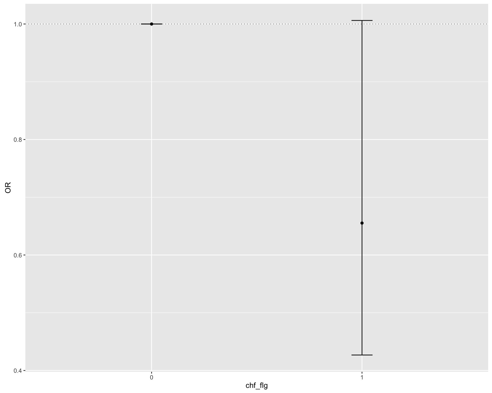
tab42 <- table(dat2$sofa.cat, dat2$day_28_flg , dnn=c("sofa","28d mort")) # d
odds42 <- tab42[, 2] / tab42[, 1]
odds42[2:4] / odds42[1] # e: use SOFA=0 as reference## [1, 3) [3, 5) [5,14]
## 0.9730924 0.9683504 1.4375256plot_OR_by_level(dat2, "sofa.cat", "day_28_flg", alpha=0.05) # f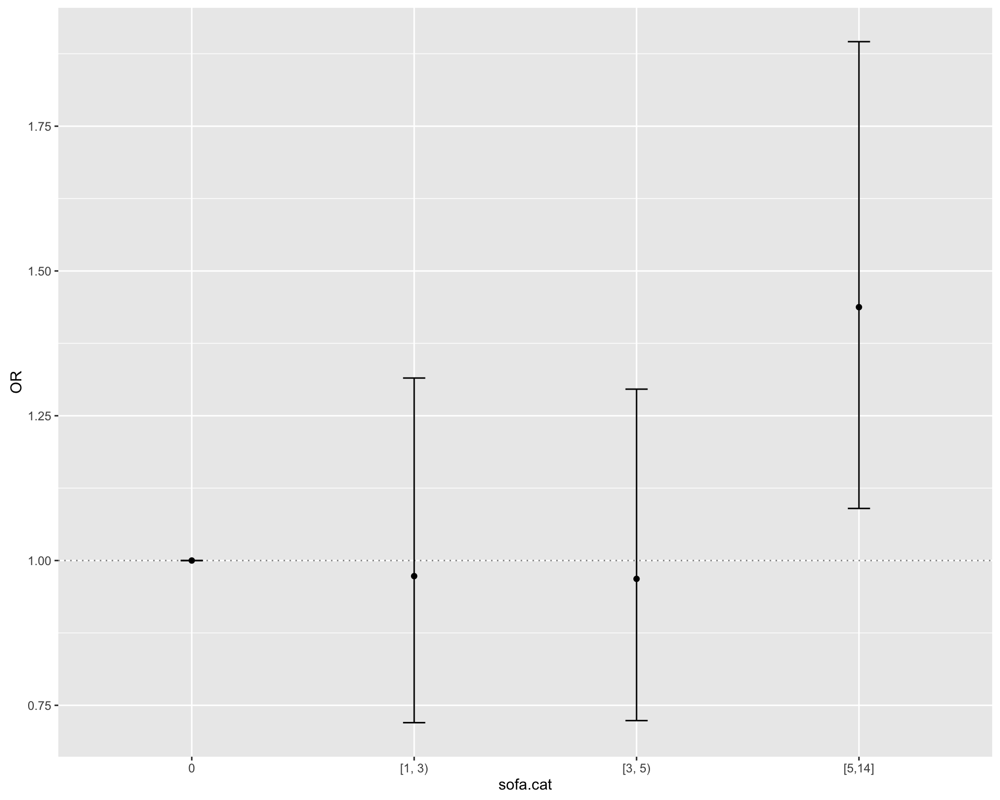
plot_prop_by_level(dat2, "sofa.cat", "day_28_flg", factor.var2="chf_flg") # g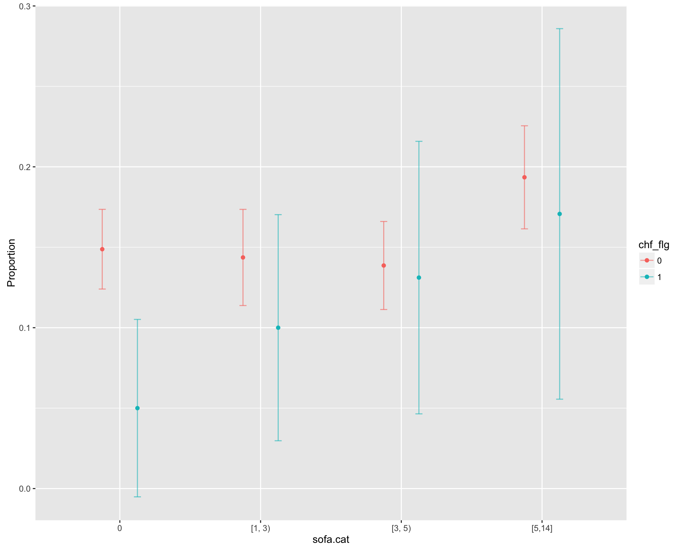
plot_prop_by_level(dat2, "chf_flg", "day_28_flg", factor.var2="sofa.cat")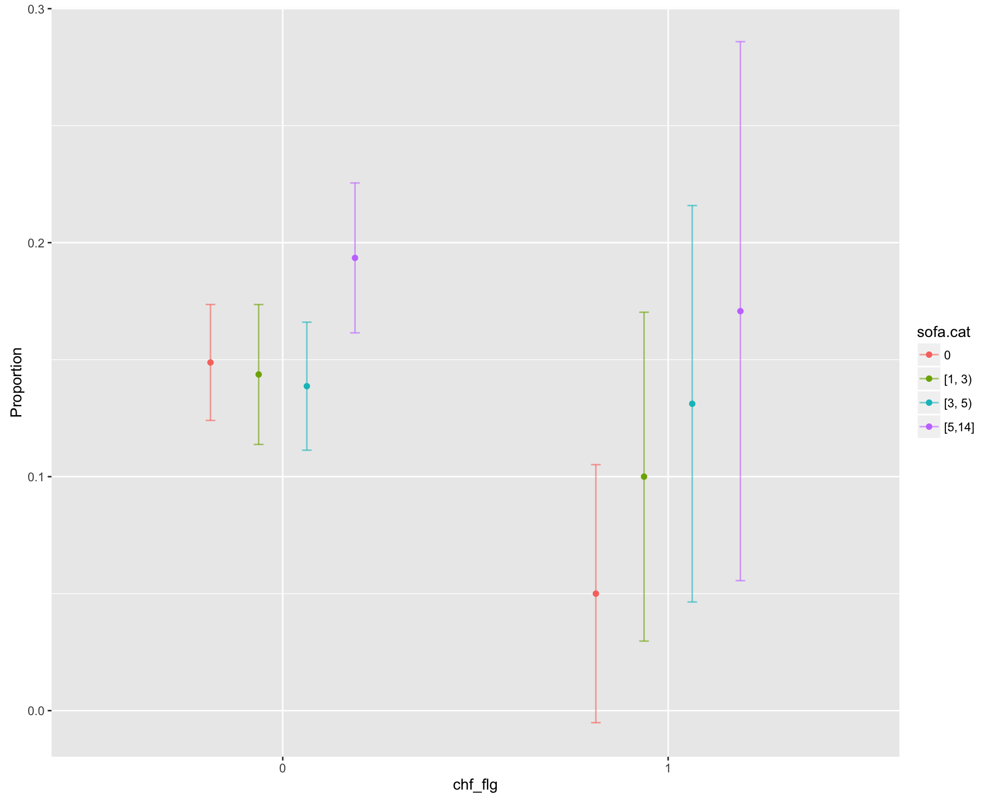
- The choosing depends on the question we want to ask. If we want to know (1) the general trend of proportion of mortality between the patients with different SOFA score or (2) the difference of proportion between CHF or non-CHF status in different SOFA groups, then we can use the first plot. But if we want to see (1) the comparison between CHF and non-CHF regardless SOFA, or (2) the difference between different SOFA groups clearly, then the second plot is preferred. For example, from the second plot we can conclude that the non-CHF group has higher 28-day mortality in general, and the proportion of mortality increases when the SOFA score become higher.